library(tidyverse)
library(gtsummary)
library(olsrr) # pour les diagnostics de régression
library(broom)
library(knitr)7 Regression Lineaire
7.1 Import des données
Pour cette séance, nous allons utiliser le jeu de données NHANES disponible dans le package du même nom.
Il s’agit de données de santé provenant de l’enquête américaine National Health and Nutrition Examination Survey (NHANES). Il contient des données sociale, comportementales et de santé.
Une description des données est disponible dans le descriptif du package lien
library(NHANES)
data("NHANES")
dim(NHANES)[1] 10000 76#kable(head(NHANES))Dans ces données il semble y avoir des doublons. Nous allons les supprimer en utilisant la fonction distinct() de dplyr. Cette fonction ne garde qu’une ligne pour un groupe de lignes qui sont absolument identiques
NHANES <- NHANES %>% distinct()
dim(NHANES)[1] 7832 76Nous sommes passés de 10000 à 7155 observations
Résumé des données
summary(NHANES) ID SurveyYr Gender Age AgeDecade
Min. :51624 2009_10:3568 female:3943 Min. : 0.00 0-9 :1212
1st Qu.:57388 2011_12:4264 male :3889 1st Qu.:16.00 10-19 :1142
Median :62914 Median :35.00 30-39 :1038
Mean :62369 Mean :35.97 20-29 :1023
3rd Qu.:67408 3rd Qu.:54.00 40-49 :1010
Max. :71915 Max. :80.00 (Other):2124
NA's : 283
AgeMonths Race1 Race3 Education
Min. : 0.0 Black :1073 Asian : 281 8th Grade : 397
1st Qu.:169.0 Hispanic: 538 Black : 563 9 - 11th Grade: 712
Median :387.0 Mexican : 920 Hispanic: 317 High School :1131
Mean :403.1 White :4626 Mexican : 451 Some College :1695
3rd Qu.:615.0 Other : 675 White :2510 College Grad :1534
Max. :959.0 Other : 142 NA's :2363
NA's :4271 NA's :3568
MaritalStatus HHIncome HHIncomeMid Poverty
Divorced : 516 more 99999 :1588 Min. : 2500 Min. :0.000
LivePartner : 438 75000-99999: 809 1st Qu.: 22500 1st Qu.:1.130
Married :2940 25000-34999: 784 Median : 50000 Median :2.400
NeverMarried:1048 35000-44999: 691 Mean : 54862 Mean :2.664
Separated : 148 45000-54999: 596 3rd Qu.: 87500 3rd Qu.:4.500
Widowed : 384 (Other) :2711 Max. :100000 Max. :5.000
NA's :2358 NA's : 653 NA's :653 NA's :578
HomeRooms HomeOwn Work Weight
Min. : 1.000 Own :4845 Looking : 244 Min. : 2.80
1st Qu.: 5.000 Rent :2753 NotWorking:2290 1st Qu.: 54.35
Median : 6.000 Other: 184 Working :3376 Median : 71.60
Mean : 6.173 NA's : 50 NA's :1922 Mean : 69.67
3rd Qu.: 7.000 3rd Qu.: 87.90
Max. :13.000 Max. :230.70
NA's :54 NA's :61
Length HeadCirc Height BMI
Min. : 47.10 Min. :34.20 Min. : 83.6 Min. :12.88
1st Qu.: 75.15 1st Qu.:39.50 1st Qu.:155.8 1st Qu.:21.40
Median : 87.05 Median :41.30 Median :165.4 Median :25.83
Mean : 84.89 Mean :41.10 Mean :160.9 Mean :26.52
3rd Qu.: 95.80 3rd Qu.:42.98 3rd Qu.:173.9 3rd Qu.:30.64
Max. :112.20 Max. :45.40 Max. :200.4 Max. :81.25
NA's :7334 NA's :7750 NA's :317 NA's :327
BMICatUnder20yrs BMI_WHO Pulse BPSysAve
UnderWeight: 47 12.0_18.5 :1070 Min. : 40.00 Min. : 76.0
NormWeight : 709 18.5_to_24.9:2261 1st Qu.: 66.00 1st Qu.:106.0
OverWeight : 180 25.0_to_29.9:2067 Median : 72.00 Median :116.0
Obese : 197 30.0_plus :2081 Mean : 73.58 Mean :118.1
NA's :6699 NA's : 353 3rd Qu.: 82.00 3rd Qu.:127.0
Max. :136.00 Max. :226.0
NA's :1236 NA's :1246
BPDiaAve BPSys1 BPDia1 BPSys2
Min. : 0.00 Min. : 72 Min. : 0.0 Min. : 76.0
1st Qu.: 60.00 1st Qu.:106 1st Qu.: 60.0 1st Qu.:106.0
Median : 68.00 Median :116 Median : 68.0 Median :116.0
Mean : 67.03 Mean :119 Mean : 67.9 Mean :118.4
3rd Qu.: 76.00 3rd Qu.:128 3rd Qu.: 76.0 3rd Qu.:128.0
Max. :116.00 Max. :232 Max. :118.0 Max. :226.0
NA's :1246 NA's :1497 NA's :1497 NA's :1404
BPDia2 BPSys3 BPDia3 Testosterone
Min. : 0.00 Min. : 76.0 Min. : 0.00 Min. : 0.25
1st Qu.: 60.00 1st Qu.:106.0 1st Qu.: 60.00 1st Qu.: 17.53
Median : 68.00 Median :116.0 Median : 68.00 Median : 40.69
Mean : 67.19 Mean :117.9 Mean : 66.83 Mean : 193.72
3rd Qu.: 76.00 3rd Qu.:126.0 3rd Qu.: 76.00 3rd Qu.: 352.32
Max. :118.00 Max. :226.0 Max. :116.00 Max. :1795.60
NA's :1404 NA's :1400 NA's :1400 NA's :4354
DirectChol TotChol UrineVol1 UrineFlow1
Min. :0.390 Min. : 1.530 Min. : 0.0 Min. : 0.0000
1st Qu.:1.090 1st Qu.: 4.060 1st Qu.: 49.0 1st Qu.: 0.3970
Median :1.290 Median : 4.730 Median : 92.0 Median : 0.6820
Mean :1.359 Mean : 4.841 Mean :117.1 Mean : 0.9649
3rd Qu.:1.580 3rd Qu.: 5.480 3rd Qu.:162.0 3rd Qu.: 1.2130
Max. :4.030 Max. :13.650 Max. :510.0 Max. :17.1670
NA's :1296 NA's :1296 NA's :865 NA's :1340
UrineVol2 UrineFlow2 Diabetes DiabetesAge HealthGen
Min. : 0.0 Min. : 0.000 No :7077 Min. : 1.00 Excellent: 661
1st Qu.: 50.0 1st Qu.: 0.482 Yes : 622 1st Qu.:40.00 Vgood :1848
Median : 92.5 Median : 0.765 NA's: 133 Median :50.00 Good :2272
Mean :119.5 Mean : 1.154 Mean :49.07 Fair : 829
3rd Qu.:171.8 3rd Qu.: 1.507 3rd Qu.:60.00 Poor : 155
Max. :409.0 Max. :13.692 Max. :80.00 NA's :2067
NA's :6670 NA's :6671 NA's :7315
DaysPhysHlthBad DaysMentHlthBad LittleInterest Depressed
Min. : 0.000 Min. : 0.000 None :3837 None :3937
1st Qu.: 0.000 1st Qu.: 0.000 Several: 869 Several: 783
Median : 0.000 Median : 0.000 Most : 343 Most : 331
Mean : 3.423 Mean : 4.112 NA's :2783 NA's :2781
3rd Qu.: 3.000 3rd Qu.: 4.000
Max. :30.000 Max. :30.000
NA's :2074 NA's :2072
nPregnancies nBabies Age1stBaby SleepHrsNight
Min. : 1.000 Min. : 0.000 Min. :14.00 Min. : 2.000
1st Qu.: 2.000 1st Qu.: 2.000 1st Qu.:19.00 1st Qu.: 6.000
Median : 3.000 Median : 2.000 Median :22.00 Median : 7.000
Mean : 3.087 Mean : 2.503 Mean :22.48 Mean : 6.904
3rd Qu.: 4.000 3rd Qu.: 3.000 3rd Qu.:25.00 3rd Qu.: 8.000
Max. :32.000 Max. :12.000 Max. :39.00 Max. :12.000
NA's :5840 NA's :5986 NA's :6375 NA's :1935
SleepTrouble PhysActive PhysActiveDays TVHrsDay CompHrsDay
No :4430 No :2853 Min. :1.000 2_hr :1082 0_to_1_hr:1194
Yes :1481 Yes :3521 1st Qu.:2.000 1_hr : 741 0_hrs : 953
NA's:1921 NA's:1458 Median :3.000 3_hr : 727 1_hr : 844
Mean :3.753 0_to_1_hr: 526 2_hr : 491
3rd Qu.:5.000 More_4_hr: 524 3_hr : 298
Max. :7.000 (Other) : 528 (Other) : 352
NA's :4019 NA's :3704 NA's :3700
TVHrsDayChild CompHrsDayChild Alcohol12PlusYr AlcoholDay
Min. :0.000 Min. :0.000 No :1087 Min. : 1.000
1st Qu.:1.000 1st Qu.:0.000 Yes :3892 1st Qu.: 1.000
Median :2.000 Median :1.000 NA's:2853 Median : 2.000
Mean :1.979 Mean :2.255 Mean : 2.947
3rd Qu.:3.000 3rd Qu.:6.000 3rd Qu.: 3.000
Max. :6.000 Max. :6.000 Max. :82.000
NA's :7298 NA's :7298 NA's :4160
AlcoholYear SmokeNow Smoke100 Smoke100n SmokeAge
Min. : 0.00 No :1307 No :3055 Non-Smoker:3055 Min. : 6.00
1st Qu.: 3.00 Yes :1116 Yes :2423 Smoker :2423 1st Qu.:15.00
Median : 24.00 NA's:5409 NA's:2354 NA's :2354 Median :17.00
Mean : 73.33 Mean :17.75
3rd Qu.:104.00 3rd Qu.:19.00
Max. :364.00 Max. :72.00
NA's :3388 NA's :5507
Marijuana AgeFirstMarij RegularMarij AgeRegMarij HardDrugs
No :1573 Min. : 1.00 No :2679 Min. : 5.00 No :3547
Yes :2096 1st Qu.:15.00 Yes : 990 1st Qu.:15.00 Yes : 764
NA's:4163 Median :16.00 NA's:4163 Median :17.00 NA's:3521
Mean :17.02 Mean :17.65
3rd Qu.:18.00 3rd Qu.:19.00
Max. :48.00 Max. :52.00
NA's :5737 NA's :6842
SexEver SexAge SexNumPartnLife SexNumPartYear SameSex
No : 175 Min. : 9.00 Min. : 0.0 Min. : 0.000 No :4000
Yes :4137 1st Qu.:15.00 1st Qu.: 2.0 1st Qu.: 1.000 Yes : 312
NA's:3520 Median :17.00 Median : 5.0 Median : 1.000 NA's:3520
Mean :17.41 Mean : 15.4 Mean : 1.327
3rd Qu.:19.00 3rd Qu.: 12.0 3rd Qu.: 1.000
Max. :50.00 Max. :2000.0 Max. :69.000
NA's :3699 NA's :3552 NA's :4172
SexOrientation PregnantNow
Bisexual : 91 Yes : 54
Heterosexual:3426 No :1197
Homosexual : 70 Unknown: 41
NA's :4245 NA's :6540
7.2 Régression linéaire
Pour modéliser / étudier une variable continue en fonction d’une ou plusieurs autres variables, on peut réaliser une régression linéaire.
Rappel : Les hypothèses de la régression linéaire sont :
- Linéarité de la relation entre la variable expliquée et la variable explicative
- Abscence de colinéarité des variables explicatives
- Variance constante des résidus (homoscédasticité)
- Normalité des résidus
- Indépendance des résidus
- Nullité de l’espérance des résidus (validée par construction)
Pour réaliser une régression linéaire en R, on utilise la fonction lm(). Elle su’utilise de la façon suivante :
\[lm(\text{outcome_var } \sim \text{ } x1+x2+x3\text{, data} = \text{dataset_name})\]
Pour obtenir une sortie avec les informations principales de la régrression on utilise la fonction summary()
Par exemple, nous pouvons modéliser par une régression linéaire le lien entre l’IMC et l’âge, le sexe, l’ethnicité, le niveau d’éducation et le statut marital
reg <- lm(BMI ~ Gender + Age + Race1 + Education + MaritalStatus, data = NHANES)
summary(reg)
Call:
lm(formula = BMI ~ Gender + Age + Race1 + Education + MaritalStatus,
data = NHANES)
Residuals:
Min 1Q Median 3Q Max
-15.567 -4.535 -1.072 3.191 52.375
Coefficients:
Estimate Std. Error t value Pr(>|t|)
(Intercept) 31.246189 0.649866 48.081 < 2e-16 ***
Gendermale -0.203258 0.182953 -1.111 0.26662
Age 0.013282 0.006441 2.062 0.03923 *
Race1Hispanic -1.727673 0.435659 -3.966 7.41e-05 ***
Race1Mexican -1.026818 0.399309 -2.571 0.01015 *
Race1White -2.185602 0.278198 -7.856 4.74e-15 ***
Race1Other -3.984048 0.407448 -9.778 < 2e-16 ***
Education9 - 11th Grade -0.197181 0.430566 -0.458 0.64700
EducationHigh School 0.009719 0.411282 0.024 0.98115
EducationSome College -0.046028 0.400777 -0.115 0.90857
EducationCollege Grad -1.330056 0.408946 -3.252 0.00115 **
MaritalStatusLivePartner -1.177454 0.442981 -2.658 0.00788 **
MaritalStatusMarried -0.515094 0.320489 -1.607 0.10807
MaritalStatusNeverMarried -1.044403 0.377927 -2.764 0.00574 **
MaritalStatusSeparated 0.007168 0.623717 0.011 0.99083
MaritalStatusWidowed -0.891085 0.469306 -1.899 0.05765 .
---
Signif. codes: 0 '***' 0.001 '**' 0.01 '*' 0.05 '.' 0.1 ' ' 1
Residual standard error: 6.602 on 5400 degrees of freedom
(2416 observations deleted due to missingness)
Multiple R-squared: 0.03659, Adjusted R-squared: 0.03392
F-statistic: 13.67 on 15 and 5400 DF, p-value: < 2.2e-16On peut exporter les coefficients dans un tableau avec la fonction tbl_regression() du package GTsummary
tbl_regression(reg)| Characteristic | Beta | 95% CI | p-value |
|---|---|---|---|
| Gender | |||
| female | — | — | |
| male | -0.20 | -0.56, 0.16 | 0.3 |
| Age | 0.01 | 0.00, 0.03 | 0.039 |
| Race1 | |||
| Black | — | — | |
| Hispanic | -1.7 | -2.6, -0.87 | <0.001 |
| Mexican | -1.0 | -1.8, -0.24 | 0.010 |
| White | -2.2 | -2.7, -1.6 | <0.001 |
| Other | -4.0 | -4.8, -3.2 | <0.001 |
| Education | |||
| 8th Grade | — | — | |
| 9 - 11th Grade | -0.20 | -1.0, 0.65 | 0.6 |
| High School | 0.01 | -0.80, 0.82 | >0.9 |
| Some College | -0.05 | -0.83, 0.74 | >0.9 |
| College Grad | -1.3 | -2.1, -0.53 | 0.001 |
| MaritalStatus | |||
| Divorced | — | — | |
| LivePartner | -1.2 | -2.0, -0.31 | 0.008 |
| Married | -0.52 | -1.1, 0.11 | 0.11 |
| NeverMarried | -1.0 | -1.8, -0.30 | 0.006 |
| Separated | 0.01 | -1.2, 1.2 | >0.9 |
| Widowed | -0.89 | -1.8, 0.03 | 0.058 |
| Abbreviation: CI = Confidence Interval | |||
Un avantage de cette fonction est qu’elle affiche les modalités de référence
7.2.1 Extraction des données de la régression
Pour extraire les coefficients, on utilise la commande reg$coefficients
reg$coefficients (Intercept) Gendermale Age
31.246189483 -0.203258234 0.013282431
Race1Hispanic Race1Mexican Race1White
-1.727672872 -1.026818143 -2.185601993
Race1Other Education9 - 11th Grade EducationHigh School
-3.984048213 -0.197181112 0.009719181
EducationSome College EducationCollege Grad MaritalStatusLivePartner
-0.046028296 -1.330055594 -1.177454414
MaritalStatusMarried MaritalStatusNeverMarried MaritalStatusSeparated
-0.515093942 -1.044402753 0.007168173
MaritalStatusWidowed
-0.891084986 Pour extraire les résidus, plusieurs options:
- utiliser la commande reg$residuals
reg$residuals[1:10] # ici je n'affiche que les 10 premiers pour ne pas encombrer le document 1 3 6 7 8 9 11
3.4164429 2.0820561 -0.5731473 -5.5028475 -4.6076547 -2.8323055 -4.2643776
12 14 15
-1.8310198 -0.2502747 -3.3089004 - utiliser les fonctions residuals() ou resid()
residuals(reg)[1:10] 1 3 6 7 8 9 11
3.4164429 2.0820561 -0.5731473 -5.5028475 -4.6076547 -2.8323055 -4.2643776
12 14 15
-1.8310198 -0.2502747 -3.3089004 resid(reg)[1:10] 1 3 6 7 8 9 11
3.4164429 2.0820561 -0.5731473 -5.5028475 -4.6076547 -2.8323055 -4.2643776
12 14 15
-1.8310198 -0.2502747 -3.3089004 Pour extraire les valeurs prédites de chaque observation, comme pour les résidus, il y a 2 options:
- utiliser la commande reg$fitted.values
reg$fitted.values[1:10] 1 3 6 7 8 9 11 12
28.80356 28.48794 27.81315 29.17285 28.29765 28.86231 30.48438 28.43102
14 15
28.79027 29.14890 - utiliser les fonctions fitted() ou fitted.values()
fitted(reg)[1:10] 1 3 6 7 8 9 11 12
28.80356 28.48794 27.81315 29.17285 28.29765 28.86231 30.48438 28.43102
14 15
28.79027 29.14890 fitted.values(reg)[1:10] 1 3 6 7 8 9 11 12
28.80356 28.48794 27.81315 29.17285 28.29765 28.86231 30.48438 28.43102
14 15
28.79027 29.14890 On peut obtenir un tableau avec le résumé des coefficients (estimation, écart-type p-value, t-test) avec la fonction tidy() du package broom. Les bornes de l’intervalle de confiance à 95% peuvent être ajoutées en utilisant l’argument conf.int=TRUE. Pour un autre niveau de confiance, on peut ajouter l’argument conf.level = 0.99
tab_summary <- tidy(reg, conf.int = T)
head(tab_summary)# A tibble: 6 × 7
term estimate std.error statistic p.value conf.low conf.high
<chr> <dbl> <dbl> <dbl> <dbl> <dbl> <dbl>
1 (Intercept) 31.2 0.650 48.1 0 30.0 32.5
2 Gendermale -0.203 0.183 -1.11 2.67e- 1 -0.562 0.155
3 Age 0.0133 0.00644 2.06 3.92e- 2 0.000656 0.0259
4 Race1Hispanic -1.73 0.436 -3.97 7.41e- 5 -2.58 -0.874
5 Race1Mexican -1.03 0.399 -2.57 1.02e- 2 -1.81 -0.244
6 Race1White -2.19 0.278 -7.86 4.74e-15 -2.73 -1.64 7.2.2 Données manquantes
Par défaut, la fonction lm() supprime les observations pour lesquelless il y a une donnée manquante pour au moins une des variables du modèle.
Pour savoir combien d’observations ont été utilisées pour ajuster le modèle, on peut regarder la longueur du vecteur des résidus ou bien de celui des valeurs prédites
length(reg$residuals)[1] 5416length(reg$fitted.values)[1] 5416Ainsi dans cet exemple, sur les 7832 observations de notre jeu de données, seulement 5416 ont des données complètes sur les variables considérées et sont donc prises en compte pour ajuster le modèle.
La fonction na.omit() permet de ne garder que les observations qui n’ont aucune donnée manquante. Pour obtenir le tableau de données utilisé dans la régression, nous pouvons appliquer cette fonction à nos données en ne sélectionnant que les variables utilisées dans la régression
dataReg <- na.omit(NHANES %>% select(c(BMI, Gender , Age, Race1, Education, MaritalStatus)))
dim(dataReg)[1] 5416 6head(dataReg)# A tibble: 6 × 6
BMI Gender Age Race1 Education MaritalStatus
<dbl> <fct> <int> <fct> <fct> <fct>
1 32.2 male 34 White High School Married
2 30.6 female 49 White Some College LivePartner
3 27.2 female 45 White College Grad Married
4 23.7 male 66 White Some College Married
5 23.7 male 58 White College Grad Divorced
6 26.0 male 54 White 9 - 11th Grade Married 7.2.3 Visualisation graphique des coefficients
Pour visualiser graphiquement les coefficients de la régression, on peut réaliser un forestplot
# Extraire les coefficients et les intervalles de confiance
tab_summary <- tidy(reg, conf.int = TRUE)
ggplot(tab_summary, aes(x = estimate, y = term)) +
geom_point(size = 2) + # Ajouter les points pour les coefficients
geom_errorbar(aes(xmin = conf.low, xmax = conf.high), width = 0.2) + # Ajouter les barres d'erreur pour les intervalles de confiance
geom_vline(xintercept = 0, col = "red") + # Ajout de la ligne des 0
labs(x = "Coefficients", y = "Estimation") +
theme_minimal() # Utiliser un thème minimaliste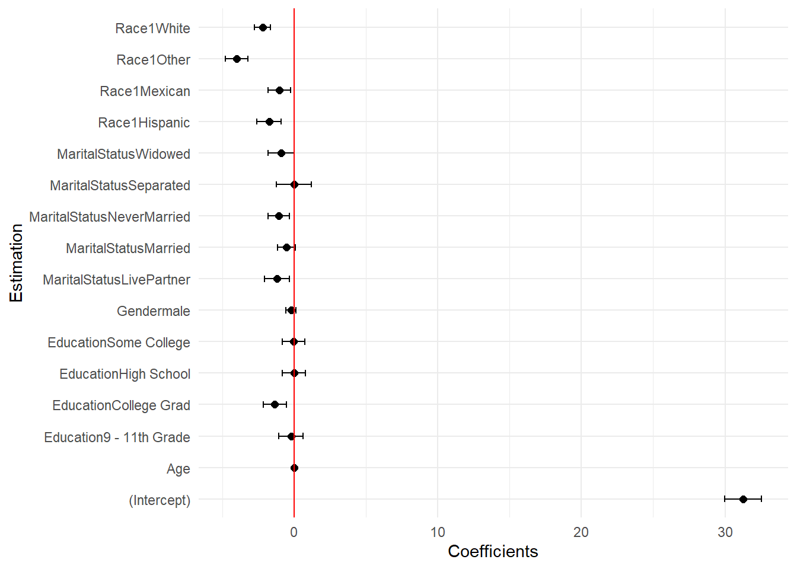
Même graphique sans l’intercept
tab_summary <- tidy(reg, conf.int = TRUE) %>%
filter(term!="(Intercept)")
ggplot(tab_summary, aes(x = estimate, y = term)) +
geom_point(size = 2) + # Ajouter les points pour les coefficients
geom_errorbar(aes(xmin = conf.low, xmax = conf.high), width = 0.2) + # Ajouter les barres d'erreur pour les intervalles de confiance
geom_vline(xintercept = 0, col = "red") + # Ajout de la ligne des 0
labs(x = "Coefficients", y = "Estimation") +
theme_minimal() # Utiliser un thème minimaliste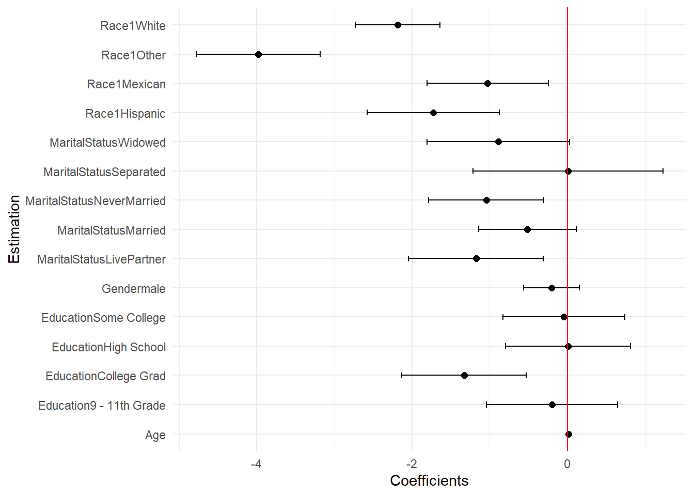
Le package ggstats propose une fonction permettant d’obtenir un joli forrest plot : ggcoef_model()
ggstats::ggcoef_model(reg)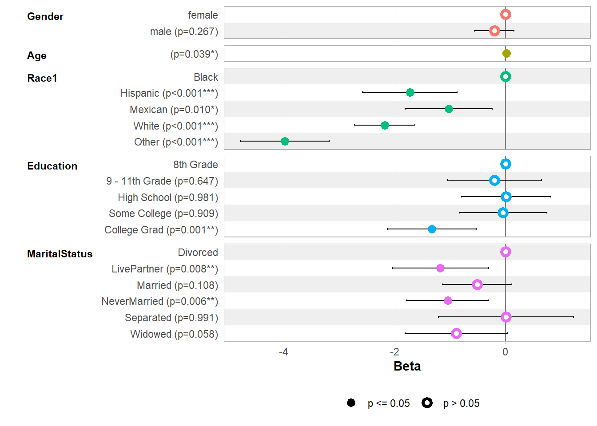
*Ressource : https://larmarange.github.io/ggstats/articles/ggcoef_model.html#quick-coefficients-plot
7.2.4 Modèles emboités
Considérons maintenant le même modèle de régression, auquel on ajoute la variable du revenu (HHIncomeMid).
Pour ce faire on peut utiliser la fonction lm() comme précédemment en ajoutant HHIncomeMid
reg2 <- lm(BMI ~ Gender + Age + Race1 + Education + MaritalStatus + HHIncomeMid, data = NHANES)
summary(reg2)
Call:
lm(formula = BMI ~ Gender + Age + Race1 + Education + MaritalStatus +
HHIncomeMid, data = NHANES)
Residuals:
Min 1Q Median 3Q Max
-15.174 -4.476 -1.053 3.219 51.643
Coefficients:
Estimate Std. Error t value Pr(>|t|)
(Intercept) 3.196e+01 6.890e-01 46.380 < 2e-16 ***
Gendermale -1.075e-01 1.915e-01 -0.561 0.574550
Age 1.035e-02 6.749e-03 1.534 0.125026
Race1Hispanic -1.872e+00 4.676e-01 -4.005 6.3e-05 ***
Race1Mexican -1.404e+00 4.262e-01 -3.294 0.000994 ***
Race1White -2.373e+00 2.955e-01 -8.031 1.2e-15 ***
Race1Other -4.136e+00 4.338e-01 -9.535 < 2e-16 ***
Education9 - 11th Grade -8.220e-02 4.646e-01 -0.177 0.859585
EducationHigh School 1.893e-01 4.410e-01 0.429 0.667803
EducationSome College 2.752e-01 4.350e-01 0.633 0.526981
EducationCollege Grad -9.353e-01 4.551e-01 -2.055 0.039912 *
MaritalStatusLivePartner -1.045e+00 4.705e-01 -2.220 0.026470 *
MaritalStatusMarried -3.412e-01 3.400e-01 -1.004 0.315645
MaritalStatusNeverMarried -1.110e+00 3.967e-01 -2.799 0.005141 **
MaritalStatusSeparated 6.782e-03 6.666e-01 0.010 0.991883
MaritalStatusWidowed -9.150e-01 4.911e-01 -1.863 0.062501 .
HHIncomeMid -1.257e-05 3.363e-06 -3.738 0.000188 ***
---
Signif. codes: 0 '***' 0.001 '**' 0.01 '*' 0.05 '.' 0.1 ' ' 1
Residual standard error: 6.598 on 4939 degrees of freedom
(2876 observations deleted due to missingness)
Multiple R-squared: 0.04232, Adjusted R-squared: 0.03922
F-statistic: 13.64 on 16 and 4939 DF, p-value: < 2.2e-16Une autre façon de faire est d’utiliser la fonction update(). Cette fonction permet d’ajouter une ou plusieurs variables à un modèle déjà ajusté.
\[ \text{update (objet_ancien_model, }.\sim. + \text{ nouvelle_var)}\]
reg2bis <- update(reg, .~.+HHIncomeMid)
summary(reg2bis)
Call:
lm(formula = BMI ~ Gender + Age + Race1 + Education + MaritalStatus +
HHIncomeMid, data = NHANES)
Residuals:
Min 1Q Median 3Q Max
-15.174 -4.476 -1.053 3.219 51.643
Coefficients:
Estimate Std. Error t value Pr(>|t|)
(Intercept) 3.196e+01 6.890e-01 46.380 < 2e-16 ***
Gendermale -1.075e-01 1.915e-01 -0.561 0.574550
Age 1.035e-02 6.749e-03 1.534 0.125026
Race1Hispanic -1.872e+00 4.676e-01 -4.005 6.3e-05 ***
Race1Mexican -1.404e+00 4.262e-01 -3.294 0.000994 ***
Race1White -2.373e+00 2.955e-01 -8.031 1.2e-15 ***
Race1Other -4.136e+00 4.338e-01 -9.535 < 2e-16 ***
Education9 - 11th Grade -8.220e-02 4.646e-01 -0.177 0.859585
EducationHigh School 1.893e-01 4.410e-01 0.429 0.667803
EducationSome College 2.752e-01 4.350e-01 0.633 0.526981
EducationCollege Grad -9.353e-01 4.551e-01 -2.055 0.039912 *
MaritalStatusLivePartner -1.045e+00 4.705e-01 -2.220 0.026470 *
MaritalStatusMarried -3.412e-01 3.400e-01 -1.004 0.315645
MaritalStatusNeverMarried -1.110e+00 3.967e-01 -2.799 0.005141 **
MaritalStatusSeparated 6.782e-03 6.666e-01 0.010 0.991883
MaritalStatusWidowed -9.150e-01 4.911e-01 -1.863 0.062501 .
HHIncomeMid -1.257e-05 3.363e-06 -3.738 0.000188 ***
---
Signif. codes: 0 '***' 0.001 '**' 0.01 '*' 0.05 '.' 0.1 ' ' 1
Residual standard error: 6.598 on 4939 degrees of freedom
(2876 observations deleted due to missingness)
Multiple R-squared: 0.04232, Adjusted R-squared: 0.03922
F-statistic: 13.64 on 16 and 4939 DF, p-value: < 2.2e-16Pour comparer deux modèles emboîtés, on peut réaliser une ANOVA.
Attention Pour pouvoir comparer les modèles, ils doivent avoir été ajustés en utilisant les mêmes observations ! S’il y avait des données manquantes pour la nouvelle variable, le second modèle risque d’avoir été ajusté sur moins de données. Pour pouvoir comparer les modèles il faut donc réajuster la première régression sur les observations qui n’ont pas de données manquante pour HHIncomeMid
Nous allons utiliser la fonction na.omit() pour obtenir le dataset utilisé dans la deuxième régression. Nous pourrons ensuite réajuster le premier modèle sur ce nouveau dataset.
# Récupérer uniquement les obseravtions utilisées pour ajuster le modèle
dataReg <- na.omit(NHANES %>% select(c(BMI, Gender , Age, Race1, Education, MaritalStatus, HHIncomeMid)))
# Réajustement de la première régression sur ces données uniquement
reg_bis <- lm(BMI ~ Gender + Age + Race1 + Education + MaritalStatus, data = dataReg)
# Vérification
length(reg_bis$residuals)==length(reg2bis$residuals)[1] TRUENous pouvons maintenant réalisé l’anova afin de savoir si l’ajout du revenu améliore significativement le modèle. Pour ce faire, nous utilisons la fonction anova()
\[ \text{anova(modele1, modele2)}\] avec modele1 le modele avec le moins de variables
anova(reg_bis, reg2bis)Analysis of Variance Table
Model 1: BMI ~ Gender + Age + Race1 + Education + MaritalStatus
Model 2: BMI ~ Gender + Age + Race1 + Education + MaritalStatus + HHIncomeMid
Res.Df RSS Df Sum of Sq F Pr(>F)
1 4940 215613
2 4939 215005 1 608.16 13.97 0.0001878 ***
---
Signif. codes: 0 '***' 0.001 '**' 0.01 '*' 0.05 '.' 0.1 ' ' 1Rappel : L’anova teste H0: modèle 1 préféré VS H1: l’ajout de la variable améliore significativement le modèle
7.2.5 Qualité de la régression
La sortie de summary(reg) nous donne le R2 et le R2 ajusté. On peut accéder directement à ces valeurs en tant qu’élément de l’a’objet retourné par la fonction summary(), donc via le symbole “$”
summary(reg)$r.squared #R2[1] 0.03659117summary(reg)$adj.r.squared[1] 0.03391503La fonction summary() ne donne en revanche pas l’aic ni le bic du modèle. Pour les obtenir, on peut utiliser les fonction AIC() et BIC()
AIC(reg)[1] 35832.71BIC(reg)[1] 35944.86Remarque : Plus l’AIC / le BIC est faible, meilleur est le modèle
Remarque 2 : On peut passer plusieurs modèles comme argument de ces fonctions. On obtient alors un dataset avec une ligne par modèle et deux colonnes (“df” correspondant au nombre de paramètre et “AIC”)
AIC(reg_bis, reg2bis) df AIC
reg_bis 17 32796.95
reg2bis 18 32784.957.2.6 Vérification des hypothèses
Il y a plusieurs façons de faire le diagnostique de la régression. Je vais présenté ici des façons manuelles et utiliser le package olsrr, mais d’autres packages existent. De plus, nous allons nous concentrer sur des analyses graphiques.
Homoscédasticité et linéarité
Pour vérifier l’homoscédasticité (constance de la variance des résidus), on peut faire un graphe des résidus (en général on préfère les résidus studentisés) en fonction des valeurs prédites
Ce graphique peut également permettre de déterminer si l’on a oublié une variable carrée, sinusoidale, etc en fonction de la forme/tendance que prennent les résidus.
Rappel : S’il y a homoscedasticité, le nuage de point ne devrait pas avoir de tendance
Remarque : On peut utiliser ce même graphique pour visualiser les outliers étant donné qu’ils sont définis en fonction de leur résidus studentisés.
Rappel 2 : On peut obtenir les résidus avec les fonctions residuals() ou resid() ou la commande reg$residuals , les résidus studentisés avec la fonction rstudent() et les valeurs prédites avec la commande reg.fitted
Avec ggplot2
n <- length(reg$residuals)
p <- length(reg$coeff)
ggplot(reg, aes(x=.fitted, y=rstudent(reg)))+
geom_point()+
geom_hline(yintercept = qt(0.975, n-1-p), col = "red")+ # 1 variable dans le modèle + l'intercept = length(reg$coeff) seuil haut pour déterminer les outliers
geom_hline(yintercept = -qt(0.975, n-1-p), col = "red")+ # seuil bas pour déterminer les outliers
geom_hline(yintercept = 0, col = "blue")+
labs(title = "Homoscédasticité et outliers", x = "Fitted values", y = "Studentized residuals")+
theme_classic()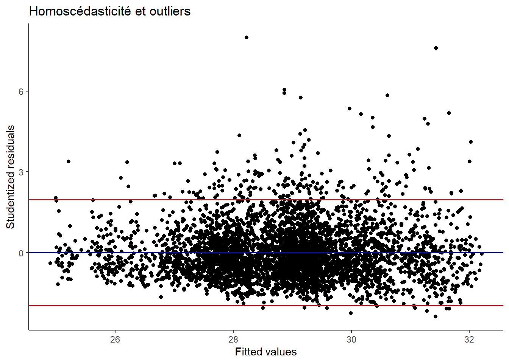
Ramarque : au lieu d’utiliser les quantiles de la loi de Student, on peut utiliser les approximations -2 et 2 comme seuil pour détecter les outliers. C’est le choix fait notamment par défaut dans le package olsrr.
Avec olssr: le graphique des résidus n’affiche pas les lignes de seuils des outliers, il sert donc juste à verifié l’homoscédasticité. Il est donné par la fonction ols_plot_resid_fit()
ols_plot_resid_fit(reg)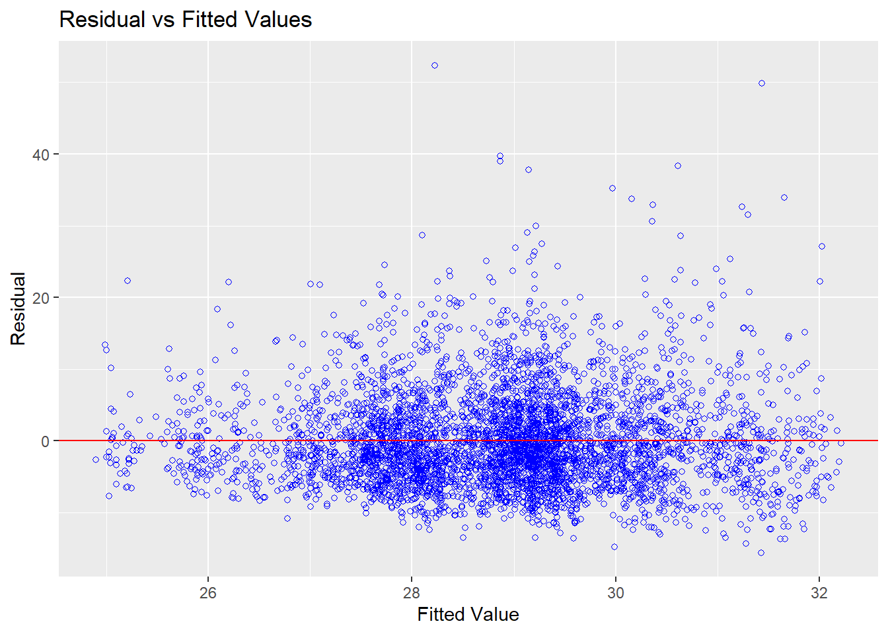
Normalité des résidus
Pour vérifier la normalité des résidus, on peut tracer leur qqplot.
Avec ggplot
ggplot(data = data.frame(residuals = resid(reg)), aes(sample = resid(reg))) +
stat_qq() + # Tracé des quantiles
stat_qq_line(col = "red") + # Ajout de la ligne de référence
labs(title = "Normalité des résidus", x = "Quantiles théoriques", y = "Quantiles des résidus") +
theme_classic()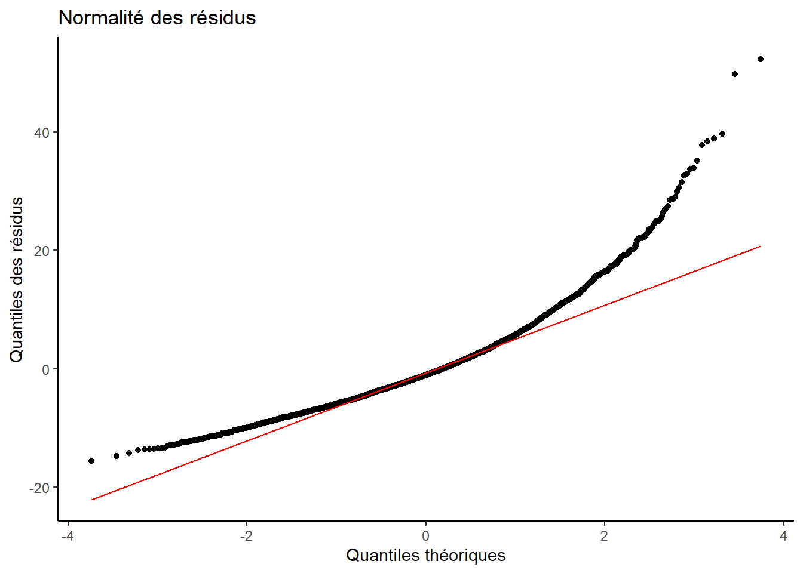
Avec olsrr
ols_plot_resid_qq(reg)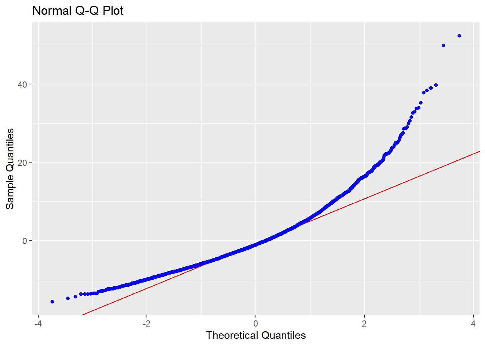
Observations levier et outliers
Outliers
Comme évoqué précédemment, pour visualisé les outliers, on peut utilisé le même graphe que pour l’hoscédasticité en ajoutant les lignes de seuil.
Rappel : Les outliers sont les observations dans les résidus studentisés sont supérieurs ou inférieurs à deux valeurs seuil.
Les seuils sont les quantiles 0.975 d’une loi de Student de paramètre \((n, n-p-1)\) et son inverse, avec \(n\) le nombre d’observations ayant servi pour l’ajustement, et \(p\) le nombre de paramètre (nombre de variables explicative + l’intercept)
Les seuils \(-2\) et \(2\) sont souvent utilisés comme approximation (c’est notamment le cas dans le package olssr).
On peut obtenir les numéros de ligne des observations outliers en utilisant la fonction which(). Cette fonction prend en argument une condition sur un vecteur et renvoie les numéros des entrées vérifiant la condition.
n <- length(reg$residuals)
p <- length(reg$coeff)
qt(0.975, n-1-p)[1] 1.960403which(rstudent(reg)>qt(0.975, n-1-p) | rstudent(reg)< -qt(0.975, n-1-p)) 34 75 90 145 176 181 187 211 212 245 250 261 340 392 400 405
24 51 64 107 128 133 138 156 157 178 182 190 245 282 289 292
406 415 453 524 535 568 588 602 663 670 735 738 742 751 771 812
293 299 324 365 374 394 409 419 460 466 512 515 519 526 540 564
882 930 980 984 996 998 1013 1041 1069 1076 1080 1094 1118 1128 1139 1175
614 644 671 675 687 688 698 719 740 746 749 758 773 779 786 810
1237 1256 1262 1264 1274 1364 1406 1469 1523 1534 1542 1560 1677 1714 1719 1728
853 863 867 869 875 937 964 1009 1046 1053 1058 1066 1141 1169 1174 1181
1764 1780 1787 1813 1833 1838 1843 1883 1887 1898 1928 2055 2071 2079 2159 2176
1203 1214 1219 1238 1253 1257 1262 1290 1293 1300 1323 1412 1423 1428 1491 1503
2206 2215 2228 2263 2322 2367 2375 2409 2446 2472 2508 2528 2538 2603 2662 2704
1521 1526 1536 1565 1607 1638 1644 1669 1697 1718 1737 1751 1757 1799 1840 1867
2719 2758 2769 2857 2895 2929 2998 3083 3109 3126 3166 3168 3197 3207 3223 3255
1875 1906 1913 1977 2000 2024 2069 2122 2140 2152 2180 2182 2198 2204 2218 2240
3268 3361 3374 3427 3446 3473 3488 3504 3552 3558 3595 3599 3742 3743 3783 3806
2251 2317 2326 2364 2377 2395 2404 2411 2440 2443 2470 2474 2579 2580 2611 2626
3807 3832 3928 4026 4027 4059 4072 4087 4131 4133 4356 4438 4534 4572 4691 4692
2627 2644 2704 2762 2763 2786 2798 2811 2847 2849 2998 3060 3124 3150 3240 3241
4786 4787 4788 4949 4968 4969 5038 5039 5040 5060 5061 5102 5103 5166 5167 5175
3293 3294 3295 3402 3416 3417 3464 3465 3466 3478 3479 3502 3503 3544 3545 3551
5282 5307 5308 5314 5323 5352 5405 5430 5440 5470 5573 5580 5587 5591 5630 5646
3620 3639 3640 3643 3650 3670 3716 3733 3741 3761 3835 3841 3845 3846 3870 3883
5647 5648 5689 5706 5809 5836 5849 5853 5862 5884 5898 5906 5931 5932 5933 5966
3884 3885 3916 3927 3993 4013 4023 4027 4031 4049 4061 4068 4089 4090 4091 4110
6021 6063 6064 6117 6121 6122 6123 6238 6364 6373 6446 6459 6508 6520 6645 6683
4149 4178 4179 4210 4214 4215 4216 4295 4384 4390 4443 4453 4487 4491 4579 4599
6695 6860 6886 6887 6910 6911 6936 6945 6980 6997 7007 7021 7024 7048 7057 7062
4608 4735 4754 4755 4770 4771 4787 4794 4821 4834 4836 4845 4846 4861 4863 4865
7063 7084 7198 7289 7307 7335 7336 7337 7338 7509 7614 7626 7627 7628 7723 7724
4866 4881 4961 5024 5038 5058 5059 5060 5061 5186 5267 5274 5275 5276 5334 5335
7774 7803
5373 5389 Si on veut savoir à quelles observations cela correspond, on peut filtrer le jeu de données sur ces observations avec la fonction slice() qui permet directement de filtrer sur les numéros de ligne.
Attention : Il faut filtrer le jeu de données qui a effectivement servi pour ajuster la régression, c’est à dire celui sans donnée manquante. Sinon les numéros de lignes ne correspondent pas.
outliers <- dataReg %>%
slice(which(rstudent(reg)>qt(0.975, n-1-p) | rstudent(reg)< -qt(0.975, n-1-p)))Leviers
Pour obtenir les leviers de chaque observation, on utilise la fonction hatvalues() qui prend l’objet de régression en argument
hatvalues(reg)[1:10] # ici je n'affiche que les 10 premiers pour ne pas encombrer le document 1 3 6 7 8 9
0.001695559 0.003236305 0.001023860 0.001285104 0.002943260 0.001958299
11 12 14 15
0.003549380 0.001940784 0.001732438 0.001404735 Pour obtenir les observations qui peuvent être considérer comme levier, on peut utiliser la fonction which() et utiliser le seuil 2p/n. Ceci est le seuil le plus souvent utilisé, il est notamment utilisé par défaut par le package olsrr. Pour être plus précis, on peut aussi différencier 2 cas :
- Si \(n-p>12\) et \(p>6\), alors \(seuil = 3p/n\)
- sinon \(seuil = 2p/n\)
Rappel : n est le nombre d’observations dans le modèle et p est le nombre de paramètres (nombre de variables explicatives et intercept)
seuil <- ifelse((n-p)>12 & p>6, 3*p/n, 2*p/n)
which(hatvalues(reg)>seuil) 22 84 178 183 195 497 574 587 737 846 933 1351 1383 1394 1409 1500
15 59 130 135 143 349 398 408 514 591 646 930 950 957 967 1029
1523 1560 1601 1717 1907 1946 1992 2184 2276 2446 2512 2569 2609 2737 2828 2842
1046 1066 1095 1172 1307 1338 1368 1507 1573 1697 1740 1776 1803 1890 1956 1966
3000 3142 3348 3418 3508 3586 3599 3709 3710 3977 3980 4091 4662 5076 5077 5142
2071 2164 2305 2358 2414 2465 2474 2555 2556 2735 2738 2814 3217 3483 3484 3530
5199 5365 5524 5745 5852 5938 5987 6090 6198 6547 6603 6604 6647 6860 6871 6931
3568 3682 3804 3949 4026 4093 4127 4196 4269 4513 4557 4558 4580 4735 4741 4783
6992 7192 7222 7309 7312 7459 7463 7476 7773 7806
4829 4958 4980 5040 5042 5144 5148 5160 5372 5392 Graphique des observations leviers avec ggplot2
ggplot(reg, aes(x= hatvalues(reg), y = rstudent(reg)))+
geom_point()+
geom_vline(xintercept = 2*p/n, col = "red")+
labs(x="Levier",
y = "Residus studentisés")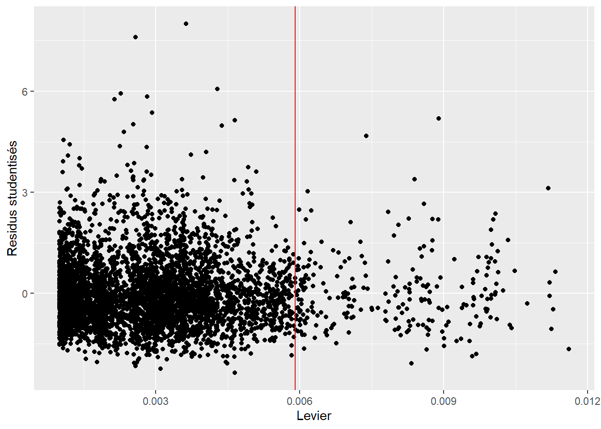
Le package olsrr permet d’obtenir un graphique avec les outliers et les observations leviers, ainsi que les numéros de ligne de ces observations en utilisant la fonction ols_plot_resid_lev()
ols_plot_resid_lev(reg)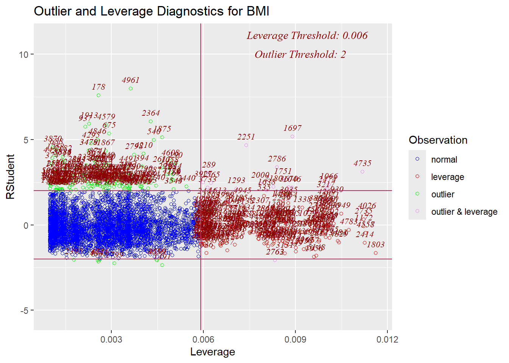
Remarque: Dans cet exemple ce n’est pas très lisible car nous avons beaucoup de données, mais ce graphique est vraiment pratique quand il y a moins de données.
Observations influentes
On obtiens les observations influentes en regardant les distances de Cook.
Les distances de Cook sont données par la fonction cook.distance()
cooks.distance(reg)[1:10] # ici je n'affiche que les 10 premiers pour ne pas encombrer le document 1 3 6 7 8 9
2.847096e-05 2.024495e-05 4.832033e-07 5.593676e-05 9.011885e-05 2.261147e-05
11 12 14 15
9.320071e-05 9.365212e-06 1.561222e-07 2.211311e-05 Il existe plusieurs seuils pour considérer qu’une observation est influente : - distance de Cook supérieure au quantile 95% de la loi de Fisher(p,n-p) avec \(n\) le nombre d’observations dans le modèle et \(p\) le nombre de paramètres. ce seuil est statistiquement robuste, mais il peut être trop conservateur quand il y a beaucoup d’observations
- distance de Cook supérieure à \(4/n\) (seuil par défaut dans olsrr) ou \(4/(n-k-1)\) avec \(k\) nombre de variables expplicatives (\(k=p-1\)) (la version \(n-k-1\) est à préférer s’il y a beaucoup de variables explicatives) - distance de Cook supérieure à \(1/n\) ou \(1/(n-k-1)\) - distance de Cook supérieure à 1
Pour obtenir les observations influentes (pour un seuil donné), on peut de nouveau utiliser la fonction which()
seuil = qf(0.95, p,n-p)
which(cooks.distance(reg)>seuil)named integer(0)seuil = 4/n
which(cooks.distance(reg)>seuil) 34 75 88 90 145 161 176 211 212 245 261 340 392 400 405 406
24 51 63 64 107 118 128 156 157 178 190 245 282 289 292 293
415 453 497 524 535 568 588 602 670 735 738 742 763 771 812 882
299 324 349 365 374 394 409 419 466 512 515 519 535 540 564 614
919 930 959 984 998 1013 1041 1069 1076 1080 1094 1128 1139 1157 1175 1215
636 644 656 675 688 698 719 740 746 749 758 779 786 799 810 837
1227 1256 1262 1264 1274 1291 1351 1364 1394 1409 1469 1523 1540 1542 1560 1602
845 863 867 869 875 888 930 937 957 967 1009 1046 1057 1058 1066 1096
1706 1714 1764 1774 1780 1784 1787 1813 1833 1838 1846 1883 1887 1948 1974 1985
1163 1169 1203 1209 1214 1217 1219 1238 1253 1257 1264 1290 1293 1339 1360 1363
2040 2068 2071 2159 2206 2241 2263 2322 2329 2341 2367 2375 2409 2432 2446 2448
1400 1422 1423 1491 1521 1545 1565 1607 1613 1620 1638 1644 1669 1687 1697 1699
2485 2505 2507 2508 2522 2528 2538 2576 2583 2603 2609 2704 2719 2769 2828 2857
1725 1734 1736 1737 1746 1751 1757 1780 1786 1799 1803 1867 1875 1913 1956 1977
2888 2895 2929 2991 2998 3000 3027 3109 3126 3151 3166 3168 3207 3223 3255 3268
1994 2000 2024 2064 2069 2071 2090 2140 2152 2169 2180 2182 2204 2218 2240 2251
3274 3287 3374 3418 3427 3441 3446 3504 3508 3552 3558 3559 3599 3667 3783 3786
2257 2268 2326 2358 2364 2375 2377 2411 2414 2440 2443 2444 2474 2522 2611 2613
3787 3788 3832 3928 4026 4027 4059 4072 4087 4094 4095 4133 4248 4356 4403 4418
2614 2615 2644 2704 2762 2763 2786 2798 2811 2817 2818 2849 2931 2998 3035 3046
4438 4505 4510 4534 4548 4572 4662 4691 4692 4786 4787 4788 4914 4919 4949 4968
3060 3103 3105 3124 3131 3150 3217 3240 3241 3293 3294 3295 3377 3381 3402 3416
4969 5038 5039 5040 5047 5060 5061 5102 5103 5166 5167 5175 5207 5208 5282 5314
3417 3464 3465 3466 3470 3478 3479 3502 3503 3544 3545 3551 3573 3574 3620 3643
5323 5352 5405 5430 5440 5580 5587 5591 5630 5646 5647 5648 5706 5836 5849 5853
3650 3670 3716 3733 3741 3841 3845 3846 3870 3883 3884 3885 3927 4013 4023 4027
5862 5884 5886 5898 5906 5932 5933 5966 6021 6063 6064 6113 6114 6117 6198 6238
4031 4049 4051 4061 4068 4090 4091 4110 4149 4178 4179 4207 4208 4210 4269 4295
6373 6446 6459 6520 6575 6645 6683 6695 6860 6871 6886 6887 6910 6911 6936 6945
4390 4443 4453 4491 4537 4579 4599 4608 4735 4741 4754 4755 4770 4771 4787 4794
6956 6997 7007 7021 7024 7048 7057 7084 7175 7198 7289 7307 7419 7463 7509 7774
4803 4834 4836 4845 4846 4861 4863 4881 4945 4961 5024 5038 5114 5148 5186 5373
7803
5389 Cet exemple illustre que le seuil choisi peut largement changer le nombre d’observations considérées comme influentes
Graphique des distances de Cook
Avec ggplot2 (une version possible)
ggplot(reg, aes(seq_along(.cooksd), .cooksd))+
geom_bar(stat="identity", position="identity")+
geom_hline(yintercept = 4/n, col = "red")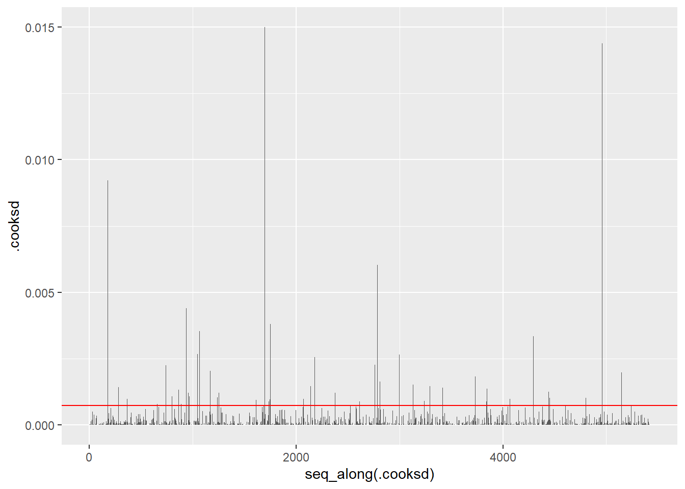
Avec olsrr, on utilise la fonction ols_plot_cooksd_chart() avec en argument l’objet de la régression. On peut choisir la méthode utilisée pour le seuil avec l’argument type = (regarder dans la documentation les numéros des différentes méthodes). Si on préfère rentrer le seuil à la main, on peut le faire avec l’argument threshold =.
ols_plot_cooksd_chart(reg,type = 1, threshold = NULL, print_plot = TRUE)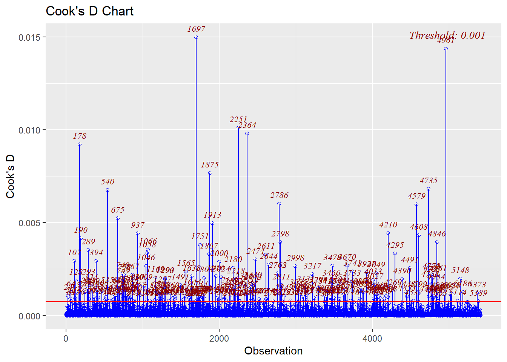
Observations problématiques
Les observations problématiques sont celles qui sont outlier ou levier et qui sont en plus influentes.
Pour obtenir ces observations, on peut utiliser la fonction intersect() appliquée aux vecteurs de ces trois types d’observations
n <- length(reg$residuals)
p <- length(reg$coeff)
outliers <- which(rstudent(reg)>qt(0.975, n-1-p) | rstudent(reg)< -qt(0.975, n-1-p))
seuil <- ifelse((n-p)>12 & p>6, 3*p/n, 2*p/n)
leviers <- which(hatvalues(reg)>seuil)
seuil = 4/n
influentes <- which(cooks.distance(reg)>seuil)
intersect(influentes, c(outliers,leviers)) [1] 24 51 64 107 128 156 157 178 190 245 282 289 292 293 299
[16] 324 349 365 374 394 409 419 466 512 515 519 540 564 614 644
[31] 675 688 698 719 740 746 749 758 779 786 810 863 867 869 875
[46] 930 937 957 967 1009 1046 1058 1066 1169 1203 1214 1219 1238 1253 1257
[61] 1290 1293 1423 1491 1521 1565 1607 1638 1644 1669 1697 1737 1751 1757 1799
[76] 1803 1867 1875 1913 1956 1977 2000 2024 2069 2071 2140 2152 2180 2182 2204
[91] 2218 2240 2251 2326 2358 2364 2377 2411 2414 2440 2443 2474 2611 2644 2704
[106] 2762 2763 2786 2798 2811 2849 2998 3060 3124 3150 3217 3240 3241 3293 3294
[121] 3295 3402 3416 3417 3464 3465 3466 3478 3479 3502 3503 3544 3545 3551 3620
[136] 3643 3650 3670 3716 3733 3741 3841 3845 3846 3870 3883 3884 3885 3927 4013
[151] 4023 4027 4031 4049 4061 4068 4090 4091 4110 4149 4178 4179 4210 4269 4295
[166] 4390 4443 4453 4491 4579 4599 4608 4735 4741 4754 4755 4770 4771 4787 4794
[181] 4834 4836 4845 4846 4861 4863 4881 4961 5024 5038 5148 5186 5373 5389 Attention : Il s’agit des numéros de ligne dans le data sans donnée manquante (obtenu avec na.omit()), ils ne correspondent donc pas forcément aux numéros de lignes dans le dataset que vous avez donner en argument de la fonction lm() !
Voici comment obtenir les observations problématiques du premier model (reg):
# D'abord on ne garde que les données utilisées pour ajuster le modèle
dataReg <- na.omit(NHANES %>% select(c(BMI, Gender , Age, Race1, Education, MaritalStatus)))
# Ensuite on filtre les observations via leur numéro de ligne
DataPb <- dataReg %>%
slice(intersect(influentes, c(outliers,leviers)))
# Dimensions
dim(DataPb)[1] 194 6# Premières observations problématiques
kable(head(DataPb))| BMI | Gender | Age | Race1 | Education | MaritalStatus |
|---|---|---|---|---|---|
| 46.69 | female | 28 | Black | High School | NeverMarried |
| 40.70 | female | 50 | Other | High School | Married |
| 48.91 | female | 31 | White | College Grad | NeverMarried |
| 51.33 | female | 68 | Black | 9 - 11th Grade | Widowed |
| 48.22 | male | 61 | White | 8th Grade | Married |
| 41.79 | female | 56 | White | Some College | Widowed |
Colinéarité
Pour détecter un problème de colinéarité des variables explicatives, on peut regarder le facteur d’inflation de la variance (VIF) qui mesure l’inflation de la variance des paramètres estimés, due à la multicollinéarité entre les variable explicative.
Un VIF = 1 signifie qu’il n’y a pas de corrélation entre la variable considérée et les autres et donc la variance du coefficient n’est pas augmentée. Un VIF supérieur à 5 indique un problème de corrélation et un VIF supérieur à 10 indique un problème très important.
On peut obtenir les VIF avec la fonction ols_vif_tol() du package olsrr
ols_vif_tol(reg) Variables Tolerance VIF
1 Gendermale 0.9624750 1.038988
2 Age 0.6544262 1.528056
3 Race1Hispanic 0.6960117 1.436757
4 Race1Mexican 0.5776379 1.731188
5 Race1White 0.4432034 2.256300
6 Race1Other 0.6508998 1.536335
7 Education9 - 11th Grade 0.3834519 2.607889
8 EducationHigh School 0.2904722 3.442670
9 EducationSome College 0.2344217 4.265817
10 EducationCollege Grad 0.2380133 4.201445
11 MaritalStatusLivePartner 0.5564523 1.797099
12 MaritalStatusMarried 0.3151684 3.172907
13 MaritalStatusNeverMarried 0.3626850 2.757214
14 MaritalStatusSeparated 0.7835570 1.276231
15 MaritalStatusWidowed 0.5670643 1.763468Cette fonction donne le VIF de chaque modalité.
Une façon d’obtenir les VIF par variable et non par modalité, est d’utiliser la fonction vif() du package car
library(car)
vif(reg) GVIF Df GVIF^(1/(2*Df))
Gender 1.038988 1 1.019308
Age 1.528056 1 1.236146
Race1 1.322326 4 1.035541
Education 1.290620 4 1.032404
MaritalStatus 1.639081 5 1.050655Cette méthode est à privilégiée
Regardons les VIF de la deuxième régression (celle avec le revenu)
vif(reg2) GVIF Df GVIF^(1/(2*Df))
Gender 1.043409 1 1.021474
Age 1.527128 1 1.235770
Race1 1.291975 4 1.032540
Education 1.500259 4 1.052012
MaritalStatus 1.769873 5 1.058752
HHIncomeMid 1.395653 1 1.181378Dans les deux cas il n’y a pas l’air d’y avoir de problème de multicolinéarité
Package olssr
Remarque générale sur le package olssr: les graphiques de ce package sont faits avec ggplot2. Cela permet de pouvoir facilement y apporter quelques modifications sur le thème, la personnalisation des axes, etc …
Exemple de personnalisation du qqplot des résidus obtenu avec olssr
ols_plot_resid_qq(reg)+
theme_bw()+
labs(x="Quantiles theoriques",
y = "Quantiles observés",
title = "QQplot des résidus")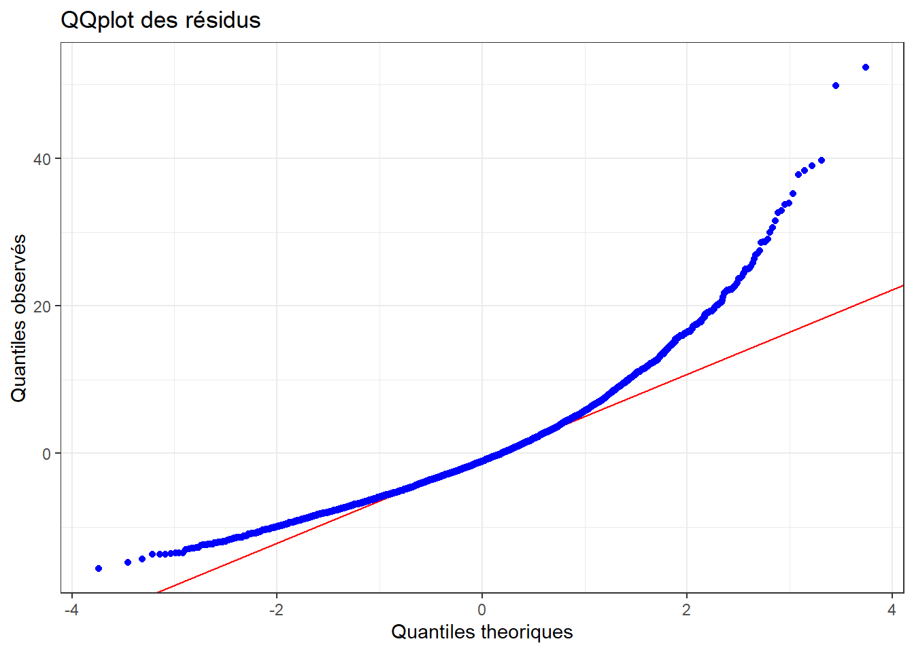
7.3 Ressources
Vérification des hypothèses :
- cours théorique de l’EPFL
- Bookdown de Teodor Tiplica Cours de régression linéaire avec R - mélange de la théorie et de la pratique
- STHDA tutoriel sur le diagnostique de régression linéaire en R
Package olssr : lien vers la documentation les différentes vignettes proposent des exemples
Didactic modeling process: Linear regression by Oscar Daniel Rivera Baena Application R Shiny comme tutoriel sur la régression linéaire avec R